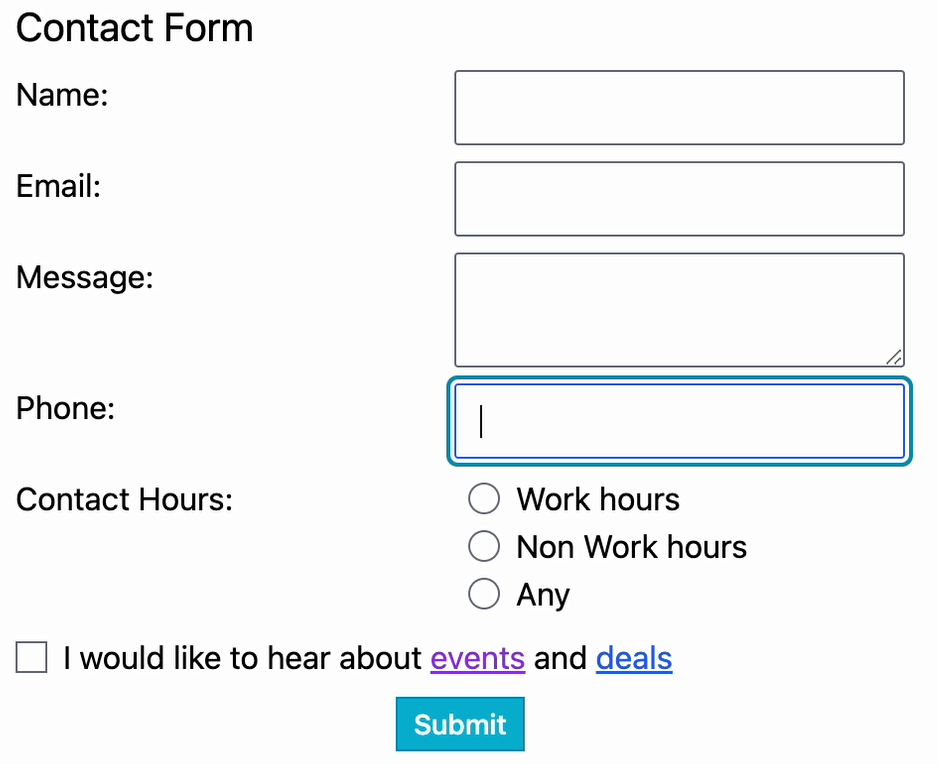

Visual Focus - Solution
Visual Focus is a cue to indicate for the user which part of the application is currently active.
Below you can find the solution to the visual focus exercise.
Compare your own solution to the one below. There's not always one correct solution, so don't worry if your solution is different.
Tasks
Designer solution
Design Summary
Adjust the form so that users can easily see which interactive element is in focus.
Make sure the first element of the form is in focus as a default.
Users should be able to navigate the form by keyboard.
Design Specifications
- Only one element should be in focus at a time
- All interactive elements should have a focused state (not just inputs, but also buttons, links, etc)
- Focus should be distinguishable from other states such as hover, visited, or active
- Focused radio buttons should be easily distinguishable from selected radio buttons
- Try to avoid changing the layout of the page with focus. Be mindful how the focus change interacts with other elements(e.g. when adding a 2px border the element will be wider than it was before focus, so check that there is enough space)
- To meet accessibility success criteria outlined in WCAG, ensure that:
-
- When the keyboard focus indicator is visible, an area of the focus indicator meets all the following:
- is at least as large as the area of a 2 CSS pixel thick perimeter of the unfocused component or sub-component, and
- has a contrast ratio of at least 3:1 between the same pixels in the focused and unfocused states.
- Make sure that there are at least two ways to show focus change, (e.g. a border and a colour change. Color alone is probably not sufficient to show focus.)
- Consider different variations of background a focused element may appear on (e.g. on dark mode, or high-contrast modes)
- Ensure visual focus change works for both keyboard focus and mouse focus
- Invisible elements should generally not be focusable (an exception would be a skip link, for example)
- Your output should look similar to the following example:
Wireframe solution:

Developer solution
Compare your solution to the one below and to the solution.css file. Did you miss anything?
Did you do anything differently? If so, why?
- Compare your solution with the solution below
- Check with the design solution. Did you implement all the design specifications?
- Check with the testing solution. Does your solution pass all the tests?
If there are any automated tests, run your code through them and see if they pass.
Tester solution
The solution should pass the following tests:
- Description of certain feature behavior
- Another description
- Another description
- Another description
- Another description
Automated tests
If there are any automated tests that can be written for this task, this is the behaviour they're testing for.
- Pseudocode Arrange
- Pseudocode Act
- Pseudocode Assert
- the tests can be found in the solution folder.